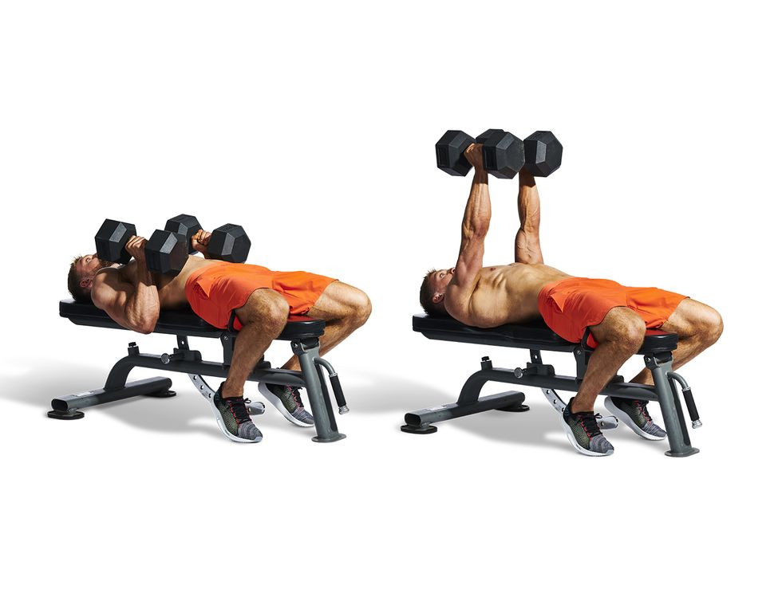

About the Chest Muscle
The chest muscle, scientifically known as the pectoralis major is a large, fan-shaped muscle located in the upper chest area. It originates from the sternum (breastbone), clavicle (collarbone), the cartilage of the ribs and it inserts into the upper part of the humerus (upper arm bone). The main function of the chest muscle is to bring the upper arm across the body, as well as to assist in various movements of the shoulder joint.
Exercises for Training Chest
1. Barbell Bench Press
This is a compound exercise that primarily targets the middle and lower portions of the chest, as well as the triceps and shoulders. Lie on a flat bench and press a barbell upwards from your chest, extending your arms fully.

2. Incline Bench Press
This variation targets the upper portion of the chest. Adjust the bench to a 30-45 degree incline and perform bench presses as usual.

3. Dumbbell Bench Press:
Similar to the barbell bench press but using dumbbells instead. This exercise allows for a greater range of motion and can help address muscle imbalances.

4. Dumbbell Flyes
This isolation exercise primarily targets the outer portion of the chest. Lie on a flat bench holding dumbbells above your chest, then lower them to the sides in a wide arc, keeping a slight bend in your elbows.